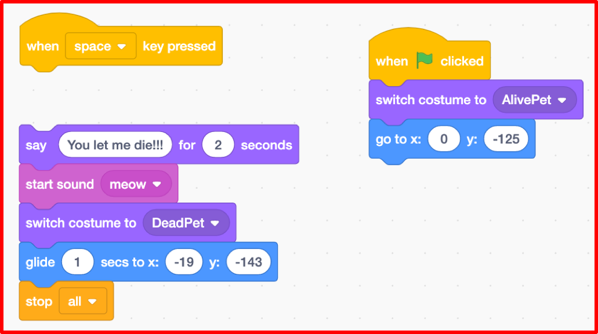
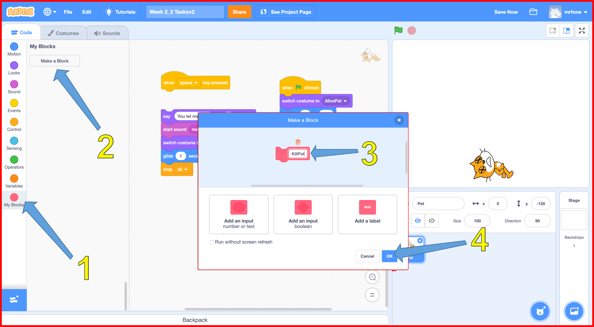
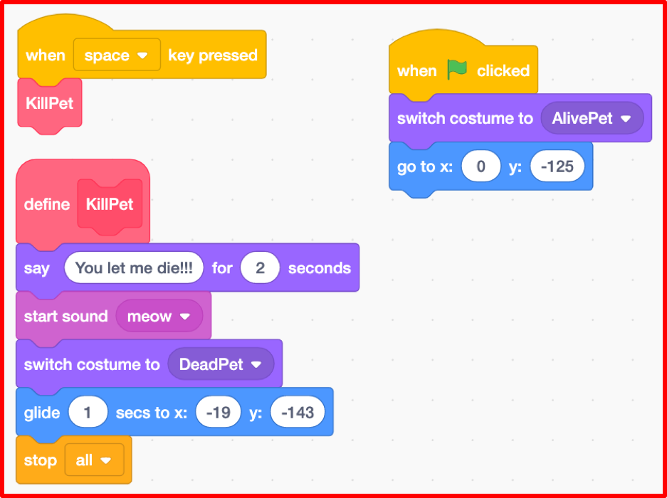
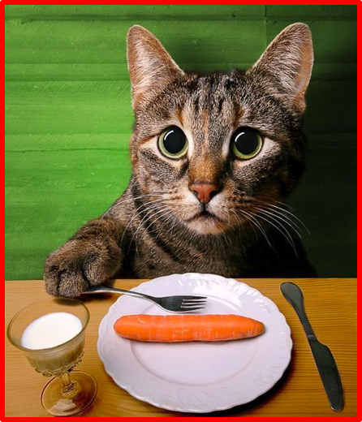
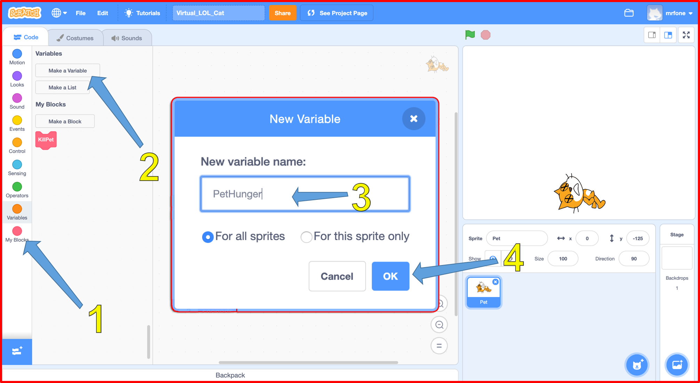
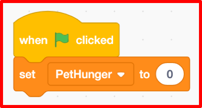
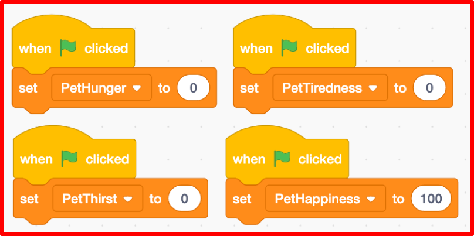
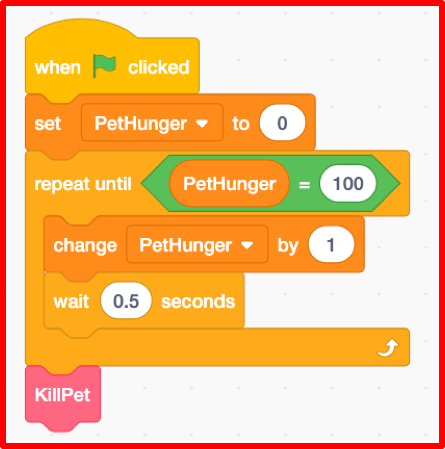

A Virtual LOLcat in Scratch
Table of Contents
Grey overlay
Pink
Green
Blue
Cream
Liliac
Purple
Yellow
1 Objectives
Developing Programming and Development, Algorithms, Literacy, Information Technology Learning Strands:
- Develop understanding of structured programming using functions.
- Be to able to declare and assign variables.
- Be able to use appropriate keyboard interrupt events.
- Be able to use arithmetic operators and loops.
- Understanding of basic display coordinates.
- Use correct grammar, punctuation and spelling of keywords throughout this project.
- Use a variety of software to manipulate and present digital content.
2 Using Functions
Learn It
- Open up your
Virtual_LOL_Catscript you were working on last lesson. - Functions are really important in coding.
- A funtion is a named part of a program that performs some specific task.
- In Scratch, Functions are called Blocks.
- Imagine I wanted you to make me a cheese sandwich. I could give you a set of instructions such as:
- Take two pieces of bread.
- Apply butter to one side of each piece.
- Place a slice of cheese on the butter side of one piece of bread.
- Place the other slice of bread, butter-side down onto the cheese.
- However, it's much easier to just say "Make me a cheese sandwich" as you probably already have the instructions stored in your memory. You have a named instruction for performing the sandwich making task
- Functions allow us to write some code, and then run that code just by calling the name of the function.
Code It
- Killing the pet is something we might want to do quite a lot. So it would make sense to create a Function for killing the pet, that we can use over and over again.
- First we'll need to disconnect the code to kill the pet, from the when space key pressed event.

- Next we'll create a new function.
- Click on My Blocks.
- Click on Make a Block.
- Name it KillPet
- Click on OK

- A new define KillPet block should have been created. This is your named function that you can attach your code to.
- Now we'll use the function
- Attach your code to kill the pet to the new define KillPet block.
- From My Blocks drag your KillPet block onto the Scripts Area.
- Attach the KillPet block to the when space key pressed event.

Run It
- Test your code to make sure it works like it did before. The pet should die when the space key is pressed.
3 Using Variables
Learn It
- Variables are another important concept in programming.
- A variable is named container that is made up of two things:
- Some data that is stored (like numbers or letters)
- A name that links to that data.
- You have variables stored in your memory, even though you might not have realised it.
- If I ask you what your name is, you can tell me. Your name is a variable.
- If I ask you what your age is, you can tell me. Your age is also a variable.
- A key thing to remember about variables, is that they can change.
- You could legally change your name to "Ima Coder", and your age increments by 1 every time you have a birthday.
Code It

- We're going to use a variable to represent how hungry our pet is.
- The variable will have a name - PetHunger
- The variable will store some data - 0 to represent not hungry, up to 100 to represent starving.
- Click on the Variables block.
- Click on Make a Variable
- Name it PetHunger.
- Click OK

- To finish off this section, you'll need to create a new script to handle the PetHunger.
- Add a new when greenflag clicked event.
- Attach a set PetHunger to 0 block beneath it. We'll add more to this part in the next lesson.
- See the example below:

Try It
- We're going to need some more variables for our virtual pet, so we might as well create them now.
- Create variables to for PetTiredness, PetThirst and PetHappiness.
- Each variable needs it's own when green flag clicked event.
- PetTiredness should start at 0.
- PetThirst should also start at 0.
- PetHappiness should start at 100.
- You should end up with something looking like the following:

4 Using Loops
Learn It
- Loops are the third fundamental concept in porgramming to learn today.
- A loop cause instructions to be repeated over and over again.
- There are basically two types of loops:
- Loops that repeat a set number of times (Definite Iteration).
- Loops that repeat until a condition is met (Indefinite Iteration).
- Imagine someone was giving directions. They might say something like:
<blockquote>At the next four roundabouts take the second exit to go straight on.</blockquote>
- This is a loop that repeats four times. You take the second exit at each roundabout exactly 4 times.
- They might have said this instead though:
<blockquote>Keep taking the second exit at the roundabouts, until you go under the blue bridge.</blockquote>
- This loop repeats an unknown number of times, until the you go under the bridge.
- In Scratch these types of loop are called the repeat and the repeat until loops.
Code It
- We're going to use a
repeat untilto make our pet get hungry. - In Scratch you nest the code you want to repeat, insite the loop block.
- Here's the complete script code. You build it from the script you already have to set the Pet's Hunger to 0
when green flag clicked
set PetHunger to 0
repeat until PetHunger = 100
change PetHunger by 1
wait 0.5 secs
KillPet
- This code can be tricky to assemble, so have a look at the example image below, but do have a go at doing it yourself first.

Run It
- Run your script to make sure that it works.
- You should see the PetHunger variable increase on the stage.
- When it reaches 100, the pet should die.
- If it doesn't work then go back over the instructions, then ask a friend and finally ask your teacher for help.
- For testing purposes, we've used a wait period of 0.5 seconds. But this isn't really practical for the real Virtual Pet. Change the wait time to something longer. You can choose any value you like.
- Now that you have got your PetHunger loop to work, you now need to repeat this for, PetTiredness, PetThirst and PetHappiness.
5 Badge It - Explaining it all
Learning strand: Programming and Development, algorithms and literacy
Badge It - Silver
- Upload the script you have complete after following the notes above.
Badge It - Gold
- To show your understanding of the script you have just finished and tested, you need to explain what the script does by adding some comments next to some of the key blocks.
- A key block is one of the following:
- A loop, such as repeat until, repeat.
- A variable assignment such as set.
- An if statement.
- A function definition/creation such as the custom block.
- A function call.
- To comment a key block, right click on the script window and choose Add Comment
- To get this badge, you need to comment at least three key blocks with clear explanations showing good understanding in good English.
Badge It - Platinum
In addition to the above Gold, you have commented all key blocks showing excellent understanding and in good English.
Upload screenshots of all of your badge tasks to bournetolearn.com